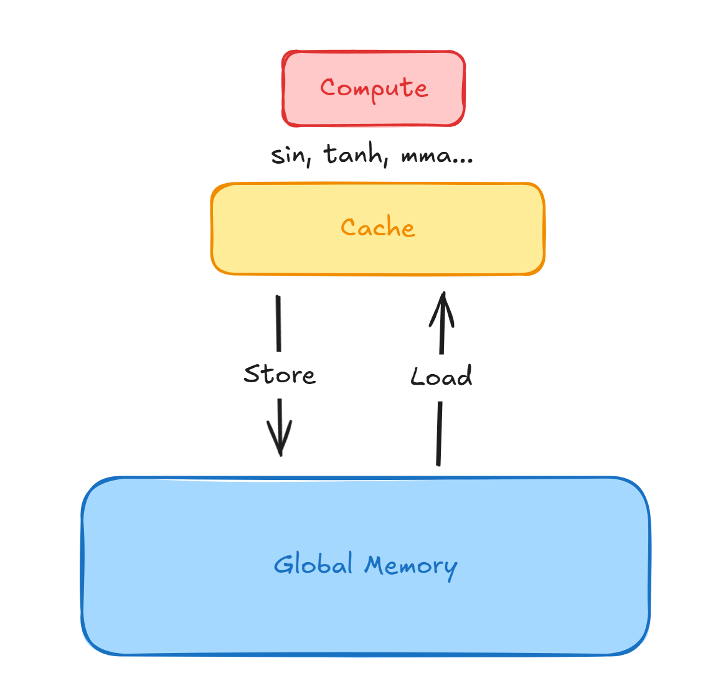

cuTile 历险记，第0集：心智模型
首先，（在通常意义上来说）cuTile不是一个库，是一门语言，因为他劫持捕获了Python的源码并且使用了自己的编译器对这段代码进行编译、Lower、执行等操作。这一点在宏观上可以对比triton。
因此在使用cuTile的时候，要一直告诉自己 “This is not Python”.
Abstraction Level
作为用户需要知道的：这门语言工作在哪个抽象层级。这里指的是这门语言提供的接口，并不直接对应硬件。cuTile的compiler magic会把我们写的代码map到硬件上，但这并不是写cuTile的程序员需要关心的。
内存
从逻辑上来说，cuTile暴露给用户的内存分为两种：
- Global Memory (Gmem):
- 读写速度：慢
- Cache:
- 读写速度：较快
编程模型
Global Array
-
存放在Gmem上
-
操作：只能进行Load(从Gmem读取到Cache)，以及Store(从Cache存入Gmem)。
-
来源：PyTorch tensor 可以直接传入。
Tile Array
-
存放在Cache上
-
操作：可以在上面进行数学操作如
sin,mma等。 -
来源：tile kernel内创建(例如
cuda.tile.zeros)，或者Global Array load得到 -
Immutable：在逻辑上，任何对Tile Array的计算操作都会返回新的Tile Array (Returns copies, not views)；你也不能直接对Tile Array里面的内容进行修改。
- cuTile的compiler magic肯定会在内部防止冗余内存的创建，毕竟速度>=SRAM的存储是如此昂贵；但是程序员是以immutable的形式编程的。
-
metadata: dtype, shape
- layout对用户是不可见的，交由编译器处理。
示意图：

编程问题
问题输入
Tensor 级别的计算过程，比如：
- Matmul+activation
- Attention Mechanism
- 其他可以用NumPy/PyTorch这一级别的抽象所描述的算法。
cuTile是用来解决什么问题的
对于同一个算法，如何明智地加载数据、进行计算，可以减少Load/Store的数据量、增大计算密度，并且减少需要在Gmem上materialize的中间数据。
奇怪的想法
据nv的编译器工程师在各种talk里面所说，cuTile将会屏蔽所有硬件特异性的功能，交由编译器处理。如果是这样的话，其他硬件厂商是不是更方便在这一层级往下做？比如，直接开发一套rocm.tile，在接口上对标cuda.tile，然后实现自己的编译器，Lower到自己的具有硬件特异性的IR代码上进行优化。这样似乎就避免了triton目前推出越来越多nvidia定制的功能，导致其他硬件厂商无法跟进的问题。